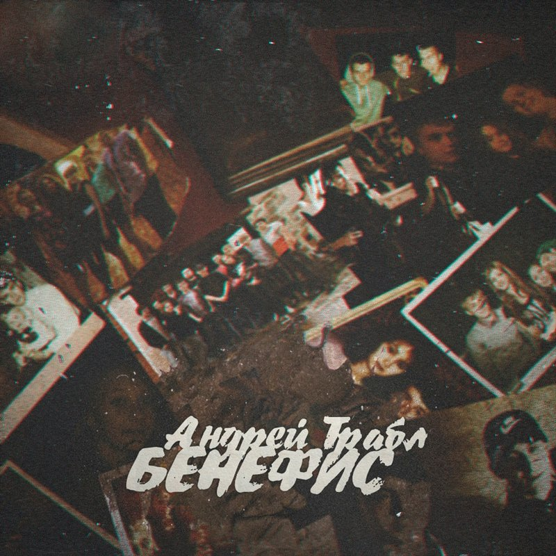

Андрей Трабл
Бенефис
Съёмка, монтаж: Макс Сорокин
Музыка: я забыл, чей бит((
Текст, запись, музыка, сведение, мастеринг, обложка: Андрей Трабл
Умный «обыкновенный» человек, даже если б и воображал себя мимоходом (а пожалуй, и всю свою жизнь) человеком гениальным и оригинальнейшим, тем не менее сохраняет в сердце своём червячка сомнения, который доводит до того, что умный человек кончает иногда совершенным отчаянием; если же и покоряется, то уже совершенно отравившись вогнанным внутри тщеславием. Этот узор на стекле запотел. Мы думали, свободны, но в западне. И я не знаю, когда заболел. Это — все, что есть за 5 лет. Написано полтысячи песен, а мотив один в них: мой персонаж уже пять лет самый ярый противник. И всюду двери. Пройти в них? Бегом за ключом. Он заключён в том, что я заключён в эти ноты, биты. Кто-то тоже любит их, но я понятия не имел, что недалеко до беды. В этих куплетах, как и прежде, только я да дым. Можешь вливать яда ты — хуже уже не будет. Думал, что сам я не скачусь до бреда. Но кто мог знать, что таится столько зла в добре-то? Я делал всё наоборот, назло всем, при этом: стипендия, вуз... Да какой ты, к черту, препод, Андрей? Правда из пасти уже пеной брызжет: убийцу твоей мечты и Уилл Грэм не отыщет. Осталось, только лишь запомнив этих лиц овал, загнуться в 19, улыбаясь в 32. Этот узор на стекле запотел. Мы думали, свободны, но в западне. И я не знаю, когда заболел. Это — все, что есть за 5 лет. Всё моё "навсегда" длилось три года и куплетик, после — пустота. И Фридерик это верно подметил. С кем я раздвигал диваны и с кем делил их, отныне раздвигают ноги, а в песнях делирий. Мой туз — это десятки тус подвалов, где показателем считалось засветить ебало, где за идею трут, но нет идей ведь. И мне не так приятно было находиться средь людей без мнений. Мой пятиэтажный мир тогда погиб почти, когда рехнулся я, память своих самых близких почтив. Нырял на дно с притоном — на мне остались язвы. Поверь мне на слово: теперь это душит питоном. Я думал проявить себя, но побоялся масс, тем более вам Звягинцев все показал за нас. Завтра проснемся — узнаем, чё дальше. Это просто трек, а не куплет чудачке. Этот узор на стекле запотел. Мы думали, свободны, но в западне. И я не знаю, когда заболел. Это — все, что есть за 5 лет. Знайте, что есть такой предел позора в сознании собственного ничтожества и слабосилия, дальше которого человек уже не может идти и с которого начинает ощущать в самом позоре своём громадное наслаждение.